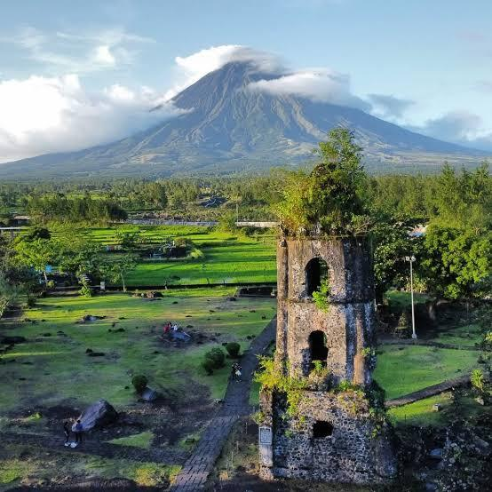

The Cagsawa Ruins are the remnants of a 16th-century Franciscan church, the Cagsawa church. It was originally built in the town of Cagsawa in 1587 but was burned down and destroyed by Dutch pirates in 1636. It was rebuilt in 1724 by Fr. Francisco Blanco but was destroyed again, along with the town of Cagsawa, on February 1, 1814, during the eruption of Mayon Volcano.
